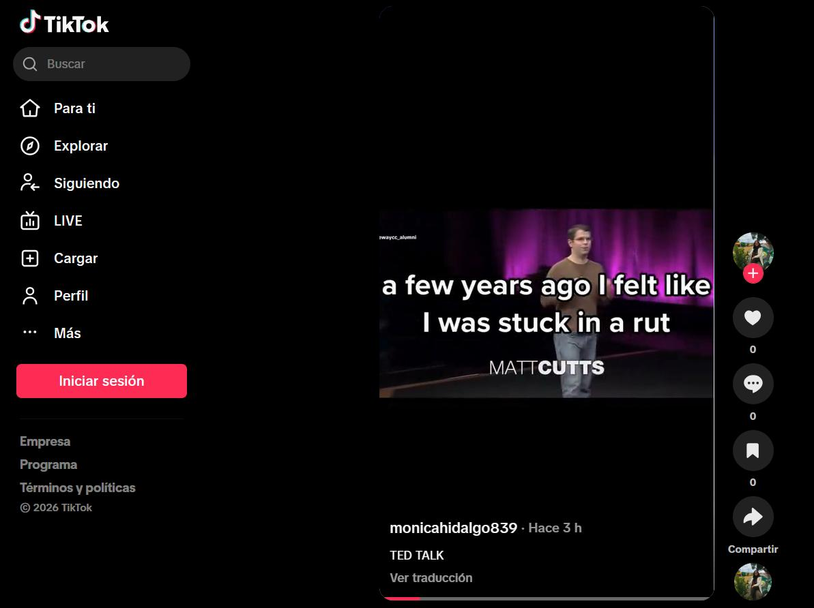
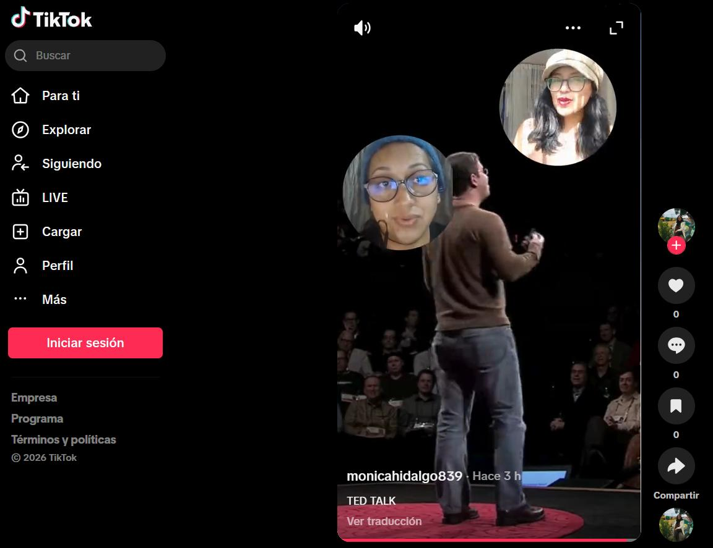
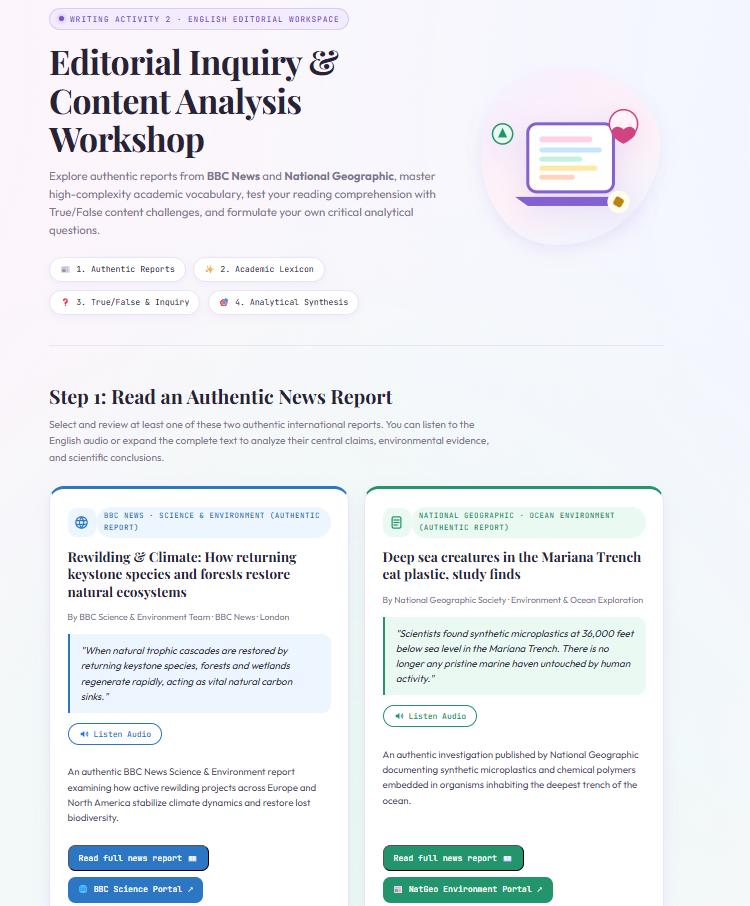
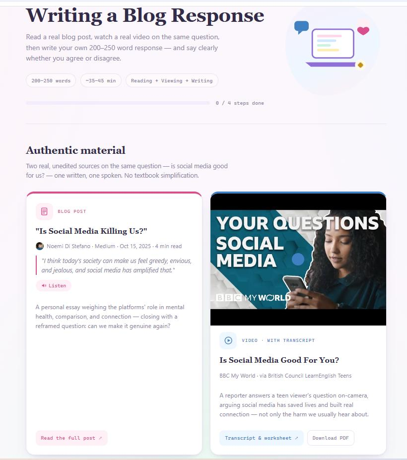

Theme 8 · Final Task
Authentic Materials in Action
Four activities for a B2 class — two speaking, two writing — each built on real TikTok, TED, BBC, National Geographic and Medium content.
Theme 8 · Final Task
Four activities for a B2 class — two speaking, two writing — each built on real TikTok, TED, BBC, National Geographic and Medium content.
This ebook presents four activities built around authentic material — content made by real speakers for real audiences, not written for a textbook. Nothing here was simplified or graded for the classroom.
Each activity shows a screen from the material, the link to the original source, what students do, and why that material earns its place. The theory follows in chapter 6; every source is listed at the end.
| Students | Young adults, 17–22, in higher education. Digital natives — social media and video are part of their daily environment. |
|---|---|
| Level | B2 (Upper-Intermediate), CEFR. They follow extended speech well, but hesitate when defending an opinion under pressure. |
| Needs | Fluency and confidence in unscripted speaking; lexical range and a clear position in writing. |
| Setting | Blended — class discussion plus asynchronous digital work. 35–60 minutes per activity. |


They watch the clip, then talk: a habit they would try for thirty days, what would get in the way, what changed last time they committed to something small. The talk is the prompt — the goal is unscripted speech about their own goals and routines.
Cutts speaks at natural speed with real hesitation, so students hear English as it is spoken. The premise gives everyone something to say without special knowledge, and it supplies exactly the lexis the discussion needs — habit, challenge, stuck in a rut, motivation. Delivering it through TikTok matters: it arrives in the same feed students already scroll.
After a TEDx talk on gamification, the class splits. Technology Innovators argue game mechanics raise engagement and retention; Traditional Educators argue constant rewards erode intrinsic motivation. Each student records a 2-minute argument on Padlet, then a 1-minute rebuttal to an opponent — politely, with evidence.
A TEDx talk exposes students to real accents and an argument built to persuade, not to illustrate grammar. The topic is one they live daily, so both sides are genuinely arguable — and the assigned role forces them to defend a position they may not hold, which is where argumentation gets learned. The 2-minute cap equalises speaking time, and the asynchronous format lets quieter students rehearse.

They read one of two authentic reports, study six academic terms drawn from them — rewilding, trophic cascade, Anthropocene, microplastics, ecological resilience, mitigation strategies — take a True/False check on the precise scientific claims, then write two critical questions of their own and a 200–250 word analytical synthesis.
BBC News and National Geographic are written for informed adult readers, so the lexical density is genuinely B2–C1 — no simplification to unlearn later. Both make falsifiable claims, which is what makes a comprehension check meaningful and a critical question possible: students can only challenge a text that actually asserts something.

They read a Medium essay arguing social media amplifies envy, watch a BBC reporter argue the opposite, then write a 200–250 word response taking a clear position. Agreeing or disagreeing is required; summarising is not enough. The app tracks the steps itself and shows word count and lexical diversity live as they type.
The pairing is the point: one source written and personal, the other spoken and journalistic — and they disagree, so a safe summary is impossible. Neither was simplified. And every student already has a private opinion on the topic, which is what turns a writing exercise into something they want to say.
Texts made by real speakers for real audiences, with no pedagogical intent (Nunan, 1989). Their value is exposure to language as actually used — and, as Gilmore (2007) argues, motivation: students recognise the content as real, so the task stops feeling like an exercise.
Both skills are treated as processes: plan, draft, revise against visible criteria. Chan, Lowie and de Bot (2016) found writing yields significantly higher lexical diversity than speech, because planning time lets students reach for words speech does not allow them to retrieve — so each mode is practised for what it uniquely develops.
Language is learned by using it to mean something (Richards & Rodgers, 2014). Nothing here has a single correct answer: students state opinions, defend positions, take sides. Language is the means; the message is the point.
The task drives the language, not the reverse (Willis & Willis, 2007). Each activity ends in a real outcome — a posted video, a rebuttal, a synthesis — and grammar appears because the task demands it, not because a syllabus scheduled it.
Students choose which report to analyse, which position to take, which classmate to rebut. The teacher sets the material and the constraints; the student supplies the stance and the pace. The self-tracking workspaces make that autonomy practical — feedback arrives without waiting for the teacher.
The TED Talk is not shown as a lecture recording — it is shown as a TikTok, in the feed, caption burned in. The format is part of the authenticity.
Both writing activities are web apps I coded and deployed rather than worksheets, with speech synthesis for the quotes, self-tracking steps, and a live lexical-diversity meter that turns a research finding into something a student can watch move while they type.
And in the debate, students argue the side they are given, not the side they hold — one constraint that converts a discussion into argumentation.
Use ← → arrow keys to turn pages